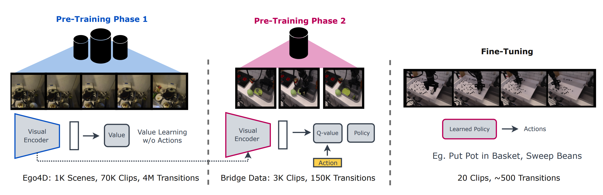
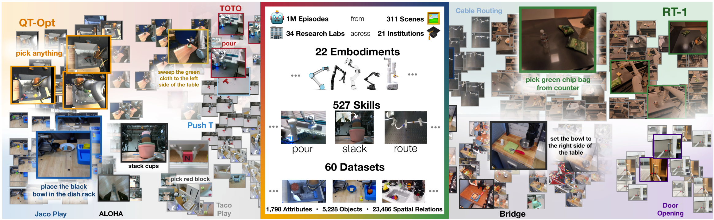
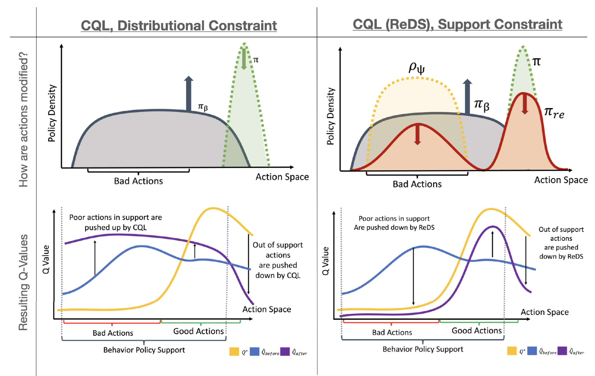

|
Preety Manna I am a graduate in Electrical and Electronics Engineering by achieveing First Class with Distinction from SRM Chennai. Previously, I was at UC Berkeley advised by Sergey Levine, Chelsea Finn, and Aviral Kumar as part of BAIR working on Deep RL and Robot Learning. |

|
ResearchMy primary research interests are in decision-making methods such as reinforcement learning and scaling them up. I believe that a good target of my research would be to produce foundation models for decision-making that utilize large diverse data sources that show good generalization and enable rapid learning. |

|
Preference Fine-Tuning of LLMs Should Leverage Suboptimal, On-Policy Data
Anikait Singh*, Fahim Tajwar*, Archit Sharma, Rafael Rafailov, Jeff Schneider, Tengyang Xie, Stefano Ermon, Chelsea Finn, Aviral Kumar ICML, 2024 project page / paper / code Learning from preferences is a common paradigm for fine-tuning language models. Yet, many algorithmic design decisions come into play. Our new work finds that approaches employing on-policy sampling or negative gradients outperform offline, maximum likelihood objectives. |

|
D5RL: Diverse Datasets for Data-Driven Deep Reinforcement Learning
Rafael Rafailov*, Kyle Beltran Hatch*, Anikait Singh, Aviral Kumar, Laura Smith, Ilya Kostrikov, Philippe Hansen-Estruch, Victor Kolev, Philip J. Ball, Jiajun Wu, Sergey Levine, Chelsea Finn RCL, 2024 project page / paper / code Offline RL algorithms enable data-driven methods without the need for costly or dangerous real-world exploration, leveraging large pre-collected datasets. However, effective and challenging benchmarks that capture real-world task properties are necessary for evaluating progress, prompting the proposal of a new benchmark for offline RL based on realistic robotic simulations and diverse data sources to support both offline RL and online fine-tuning evaluation. |
|  |
Robotic Offline RL from Internet Videos via Value-Function Pre-Training
Chethan Bhateja*, Derek Guo*, Dibya Ghosh*, Anikait Singh, Manan Tomar, Quan Vuong, Yevgen Chebotar, Sergey Levine, Aviral Kumar ICRA, 2024 paper / project page / videos VPTR is a framework that combines the benefits of pre-training on video data with robotic offline RL approaches that train on diverse robot data, resulting in value functions and policies for manipulation tasks that are robust and generalizable. |
|  |
Open X-Embodiment: Robotic Learning Datasets and RT-X Models
Open X-Embodiment Collaboration CoRL, 2024 project page / paper / blog This is an opensource dataset comprised of a large collection of robot embodiments. We study how vision-language models trained on X-Embodiment Datasets can enable efficient adaptation to new robots, tasks, and environments. |

|
RT-2: Vision-Language-Action Models Transfer Web Knowledge to Robotic Control
Google DeepMind Robotics ICRA, 2023 project page / paper / blog We study how vision-language models trained on Internet-scale data can be incorporated directly into end-to-end robotic control to boost generalization and enable emergent semantic reasoning. |
|  |
Offline RL With Realistic Datasets: Heteroskedasticity and Support Constraints
Anikait Singh*, Aviral Kumar*, Quan Vuong, Yevgen Chebotar, Sergey Levine NeurIPS, 2023 paper / talk CQL (ReDS) is an offline RL method that modifies a typical distribution constraint into an approximate support-level constraint via re-weighting to enable efficient learning from heteroskedastic dataset compositions. |

|
Cal-QL: Calibrated Offline RL Pre-Training for Efficient Online Fine-Tuning
Mitsuhiko Nakamoto*, Yuexiang Zhai*, Anikait Singh, Max Sobol Mark, Yi Ma, Chelsea Finn, Aviral Kumar, Sergey Levine NeurIPS, 2023 project page / paper / video / code A method that learns a conservative value function initialization that underestimates the value of the learned policy from offline data, while also being calibrated, in the sense that the learned Q-values are at a reasonable scale. This leads to effective online fine-tuning, enabling benefits of offline initializations in online fine-tuning |

|
Pre-Training for Robots: Offline RL Enables Learning from a Handful of Trials
Aviral Kumar*, Anikait Singh*, Frederik Ebert*, Mitsuhiko Nakamoto Yanlai Yang, Chelsea Finn, Sergey Levine RSS, 2023 project page / paper / video PTR is a framework based on offline RL that attempts to effectively learn new tasks by combining pre-training on existing robotic datasets with rapid fine-tuning on a new task, with as few as 10 demonstrations. |

|
When Should We Prefer Offline Reinforcement Learning Over Behavioral Cloning?
Aviral Kumar, Joey Hong, Anikait Singh, Sergey Levine ICLR, 2022 project page / paper Theoretical paper that characterize the properties of environments that allow offline RL methods to perform better than BC methods, even when only provided with expert data. Additionally, policies trained on sufficiently noisy suboptimal data outperform BC algorithms with expert data, especially on long-horizon problems. |

|
A Workflow for Offline Model-Free Robotic Reinforcement Learning
Aviral Kumar*, Anikait Singh*, Stephen Tian, Chelsea Finn, Sergey Levine CoRL, 2021, (Oral Presentation) project page / paper / talk Our proposed workflow aims to detect overfitting and underfitting in model-free offline RL, and provides guidelines for addressing these issues via policy selection, regularization, and architecture design. |

|
A Mobile Application for Keyword Search in Real-World Scenes
Shrinivas Pundlik, Anikait Singh, Gautam Baghel, Vilte Baliutaviciute, Gang Luo IEEE Journal of Translational Engineering in Health and Medicine, 2019 paper System to help visually-impaired patients localize where words are present in a cluttered environment. This system utilizes OCR + Levenshtein Distance along with specialized audio cues and additional assistive features to enable efficient and intuitive search in crowded, diverse environments. |
Teaching |

|
Undergraduate Student Instructor, CS285 Fall 2022
Undergraduate Student Instructor, CS188 Spring 2022 Undergraduate Student Instructor, CS285 Fall 2021 |
| Program Coordinator, Mentor, Deep Learning Portal 2024 |
|
Website template by Jon Barron. |